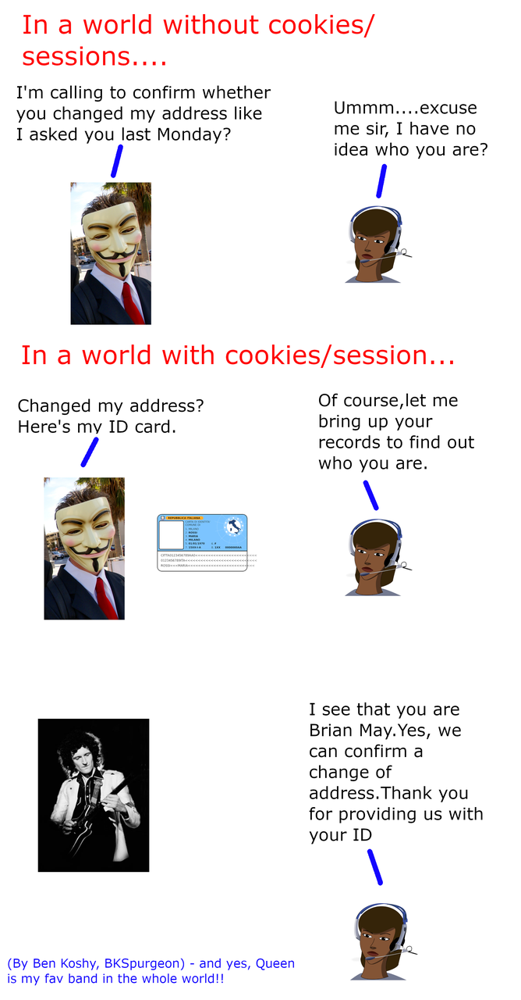

What are sessions? How do they work?
I am just beginning to start learning web application development, using python. I am coming across the terms 'cookies' and 'sessions'. I understand cookies in that they store some info in a key value pair on the browser. But I have a little confusion regarding sessions, in a session too we store data in a cookie on the user's browser.
For example - I login using username='rasmus' and password='default'. In
such a case the data will be posted to the server which is supposed to check
and log me in if authenticated. However during the entire process the server
also generates a session ID which will be stored in a cookie on my browser.
Now the server also stores this session ID in its file system or datastore.
But based on just the session ID, how would it be able to know my username
during my subsequent traversal through the site? Does it store the data on the
server as a dict where the key would be a session ID and details like
username, email etc. be the values?
I am getting quite confused here. Need help.
Answer
Because HTTP is stateless, in order to associate a request to any other request, you need a way to store user data between HTTP requests.
Cookies or URL parameters ( for ex. like http://example.com/myPage?asd=lol&boo=no ) are both suitable ways to transport data between 2 or more request. However they are not good in case you don't want that data to be readable/editable on client side.
The solution is to store that data server side, give it an "id", and let the client only know (and pass back at every http request) that id. There you go, sessions implemented. Or you can use the client as a convenient remote storage, but you would encrypt the data and keep the secret server-side.
Of course there are other aspects to consider, like you don't want people to hijack other's sessions, you want sessions to not last forever but to expire, and so on.
In your specific example, the user id (could be username or another unique ID in your user database) is stored in the session data, server-side, after successful identification. Then for every HTTP request you get from the client, the session id (given by the client) will point you to the correct session data (stored by the server) that contains the authenticated user id - that way your code will know what user it is talking to.
Suggest
Explanation via Pictures:

You can think of a session kinda like a library ID card. Everytime you go to a library, then you you show them your ID card which was issued by that particular library.
Simple Explanation by analogy
Imagine you are in a bank, trying to get some money out of your account. But it's dark; the bank is pitch black: there's no light. You are surrounded by another 20 people. They all look the same. And everybody has the same voice. And everyone is a potential bad guy. In other words, HTTP is stateless.
This bank is a funny type of bank - for the sake of argument here's how things work:
- you talk to your teller and make a request to withdraw money, and then
- you have to wait briefly on the sofa, and 20 minutes later
- you collect your money from the teller.
But how will the teller tell you apart from everyone else?
The teller can't see or readily recognise you, remember, because the lights are all out.
What if your teller gives your $10,000 withdrawal to someone else - the wrong person?! It's absolutely vital that the teller can recognise you as the one who made the withdrawal, so that you can get the money (or resource) that you asked for.
Solution:
When you first appear to the teller, he or she tells you something in secret:
"When ever you are talking to me," says the teller, "you should first identify yourself as GNASHEU329 - that way I know it's you".
Nobody else knows the secret passcode.
Example of How I Withdrew Cash:
So I decide to go to and chill out for 20 minutes and then later I go to the teller and say "I'd like to collect my withdrawal"
The teller asks me: "who are you??!"
"It's me, Mr. George Banks!"
"Prove it!"
And then I tell them my passcode: GNASHEU329
"Certainly Mr. Banks!"
That basically is how a session works. It allows one to be uniquely identified in a sea of millions of people. You need to identify yourself every time you deal with the teller.
Difference between Sessions and Cookies
Sessions : You can think of sessions as the temporary passcode in the above example. Once the bank (i.e. server) sees the passcode - they will be able to identify who you are, what you want etc.
Cookie : You can think of a cookie as simply plastic card upon which information is printed on. You can store anything on that card, like:
- name / age / sex / marital status
- passcodes
Security Concerns with Cookies
The bank can write information onto your card - and so can you. But this can be dangerous:
name: Ben Koshy sex: male bank balance: $1.99.
If I wanna be sneaky, I could edit my ID card:
name: Ben Koshy sex: male bank balance: $1 billion bucks. <------ new line
Hooray! I could print more money than Yellen and Powell combined. This presents a security risk: it is for this reason that banks "encrypt" information on cookies, so that if you tampered with it, the bank would know. As a general rule you should never put anything compromising, that can be tampered into a cookie - the bank balance should be stored on the server, where nobody can directly tamper with it.
In this case, Powell decided to tamper with bank balance in his cookie. The bank can now invalidate his session:
name: Jerome Powell session: tampering with bank balance, session invalid. log him out immediately. And fire him too.